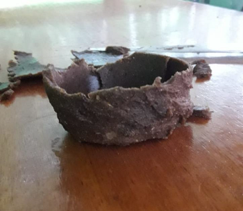
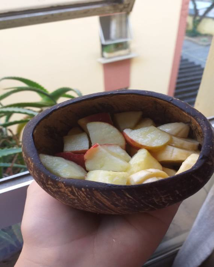

Grupo 05 - B
Integrantes:
- Rebecca Alexandra
- Luana Ribeiro
- Larissa Cotarelli
A partir de um projeto escolar que visava a montagem de uma embalagem sustentável, criamos o nosso projeto, que utiliza como base produtos que estão presentes em nosso cotidiano: o Coco e a Banana.
Os produtos que fizemos são feitos com os restos desses alimentos, que, após consumir seu interior, é descartado, sendo que todas as suas partes poderiam ser utilizadas em diversas aplicações.
Bioplástico feito de casca de banana
Um bioplástico feito a partir da casca da fruta
Tigela de casca de coco biodegradável
A partir da casca do coco, criamos uma tigela, que possui como finalidade substituir as tigelas ou potes de plástico, que são utilizadas e descartadas rapidamente, sendo o seu descarte, em maioria, indevido.
Materiais Utilizados
Bioplástico feito de casca de banana
- Oito bananas verdes
- Suco de seis laranjas espremidas
- Glicerina líquida
- Vinagre
- Possível substituir as bananas verdes por farinha de banana verde, encontrada em lojas de produtos naturais
Tigela de casca de coco biodegradável
- Coco marrom
- Folha de lixa
- Serra
- Faca
- Pincel
- Óleo de coco
Modo de Preparo
Bioplástico feito de casca de banana
Para fazer o bioplástico, foram pegas as cascas das oito bananas e colocadas no suco das seis laranjas espremidas e deixar de molho por cerca de dez minutos.
Após, é necessário colocá-lo no sol até secar completamente e sua coloração mudar para marrom. Em seguida, ela foi colocada em um triturador, até tornar-se uma farinha bem fina. Nesse momento, pode substituir a farinha pela farinha de banana verde, comprada em lojas de produtos naturais.
Após o fim desse processo, é adicionado quatro colheres de água, uma colher dessa farinha, uma colher de glicerina e uma colher de vinagre. A glicerina dará a elasticidade, enquanto o vinagre irá dar a resistência.
Essa mistura deve ser colocada em fogo baixo/médio, até se tornar homogênea e grossa. É necessário colocá-la em uma superfície plana, e, após algumas horas, ela irá tornar-se um bioplastico.
Tigela de casca de coco biodegradável
O primeiro passo consiste em cortar a tampa do Coco e retirar o seu "miolo" com o auxilio de uma faca

O segundo passo consiste em retirar os pelinhos do Coco e lixar suas bordas, arrendondando-as
Após, é necessário passar uma camada de óleo de Coco durante três dias. Com a tampa, nessa primeira tentativa, fizémos uma saboneteira.
No final, teremos uma linda embalagem, onde é possível ver as fibras naturais do coco. Sua aplicação é variada, podendo ser utilizado como pote para comidas, para guardar objetos ou para utilizá-lo da forma que preferir!
Na segunda tentativa, fizemos furos em suas laterais para fechar nossa embalagem. Os furos foram feitos com auxílio de furadeira!
Utilizamos a folha de um abacaxi para segurar a tampa, mas, é uma aplicação provisória.